Vipper
Vi spesialiserer oss på premium vippeextensions tilpasset din øyeform og dine preferanser. Alle behandlinger utføres med høykvalitets, hypoallergiske produkter.
Klassiske vipper
Én forlengelse påføres hver naturlige vippe for et mykt, naturlig utseende. Perfekt til hverdags og for kunder som foretrekker subtil eleganse eller en ”maskara- effekt”.
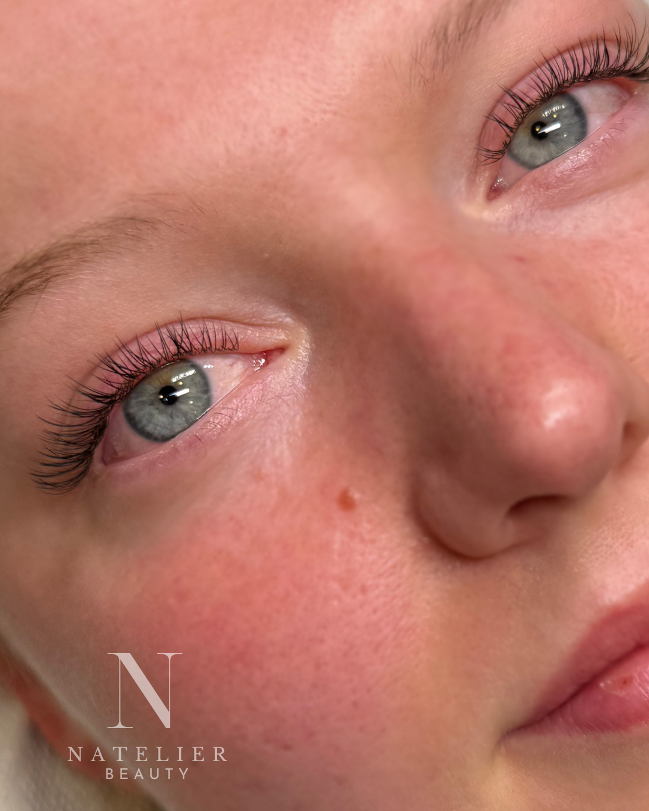
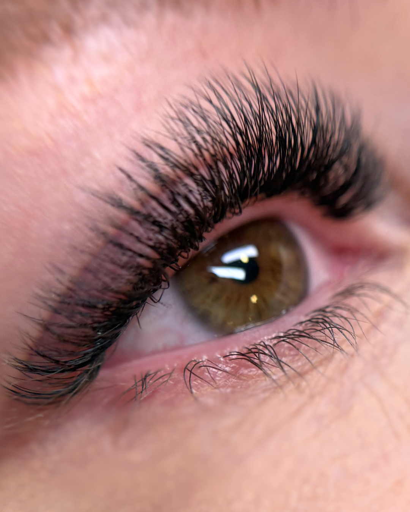
Naturlig Volum
Lettere vifte (2–5 vipper per naturlig vippe) gir moderat volum samtidig som de ser lette og luftige ut.
Ekstra Volum
Tettere vifter (5–7+ vipper) for maks volum og mer dramatisk effekt.
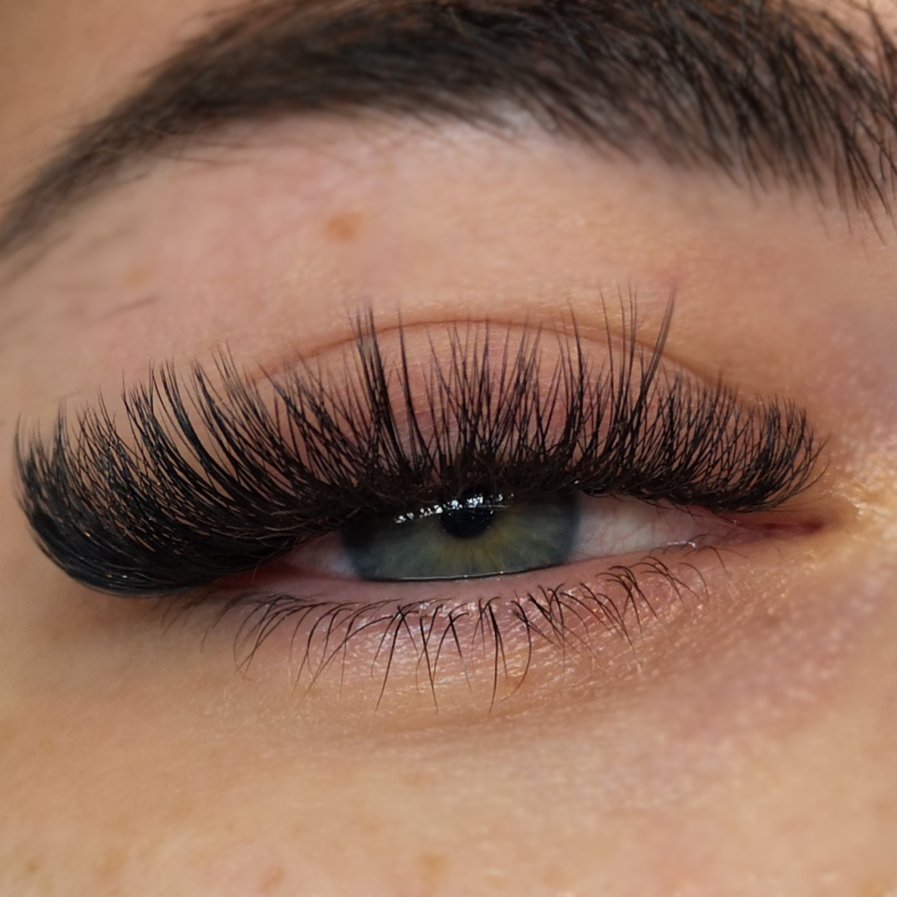
Avantgardiske vipper
placeholder

Negler
Vi er sertifiserte negleteknikere med lang erfaring. Hos oss står kvalitet, presisjon og lidenskap for negler i fokus.

Gel manikyr
Formstøpte, slitesterke negleforlengelser laget med profesjonell gelé. Du kan velge bare geléfarge med fransk / ombre, eller en fargerik shellac-finish på toppen.
Shellac manikyr
Shellac (eller gellakk) er en spesiell hybrid neglelakk utviklet av CND (Creative Nail Design). Den kombinerer egenskapene til vanlig neglelakk og gelélakk.

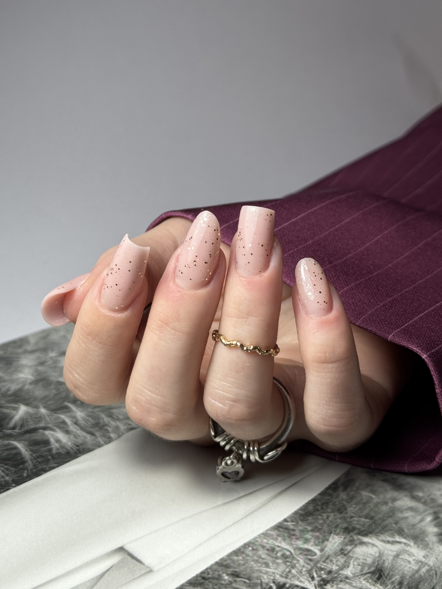
Eksklusive negler
Få neglene dine feilfrie (gel/shellack) ! Ekstra pleie for neglebåndene, farge veldig nær neglebåndet, olje, massasje og krem. Fargen legges tett inntil neglebåndet, noe som gjør at etterveksten blir mindre synlig etter en uke.
Klassisk manikyr med vanlig lakk
En tradisjonell manikyr med fokus på stell av negler og neglebånd, som kan avsluttes med vanlig neglelakk i ønsket farge. I motsetning til gelé eller shellac, herdes ikke vanlig neglelakk under lampe og kan enkelt fjernes hjemme med neglelakkfjerner. Perfekt for deg som liker å bytte farge oftere, foretrekker et naturlig og lett uttrykk, og ikke vil forplikte deg til regelmessige avtaler.

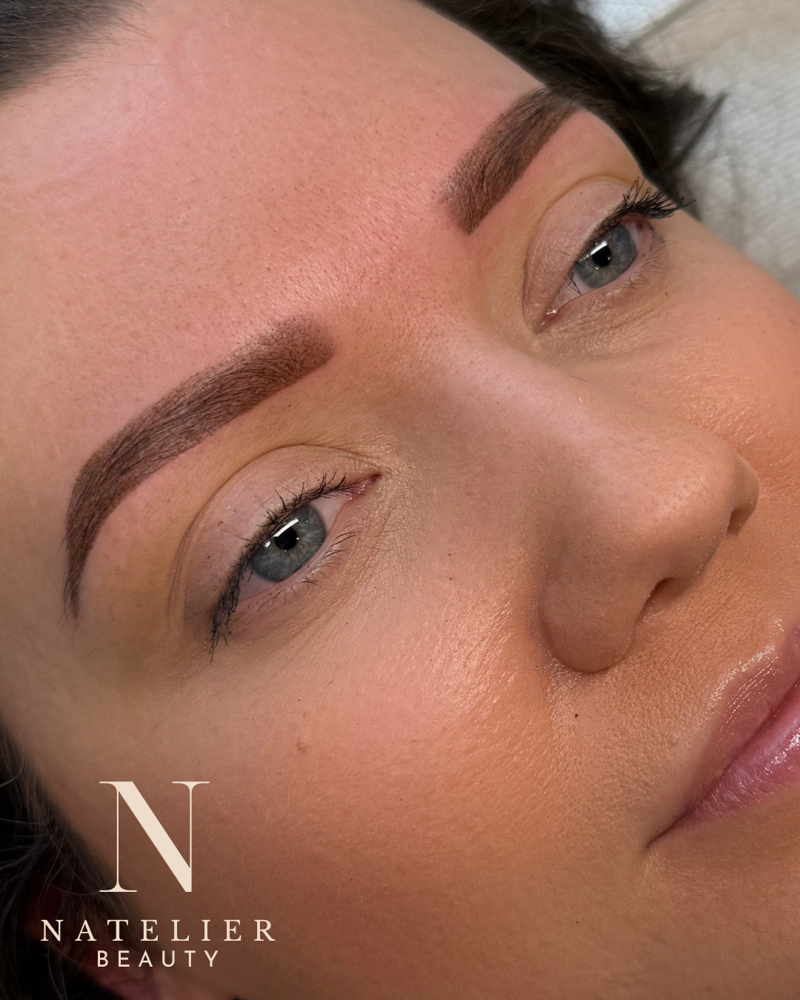
Klassisk manikyr
Profesjonell klassisk manikyr for kvinner, menn og tenåringer. Inkluderer filing og pussing av negler, pleie av neglebånd og en nærende håndkrembehandling.
Fotbehandling
Shellack pedikyr
Enkel pedikyr med filing av tånegler og profesjonell shellac- applikasjon – perfekt for en rask oppfriskning. Inkluderer ikke fotbad eller fjerning av hard hud.
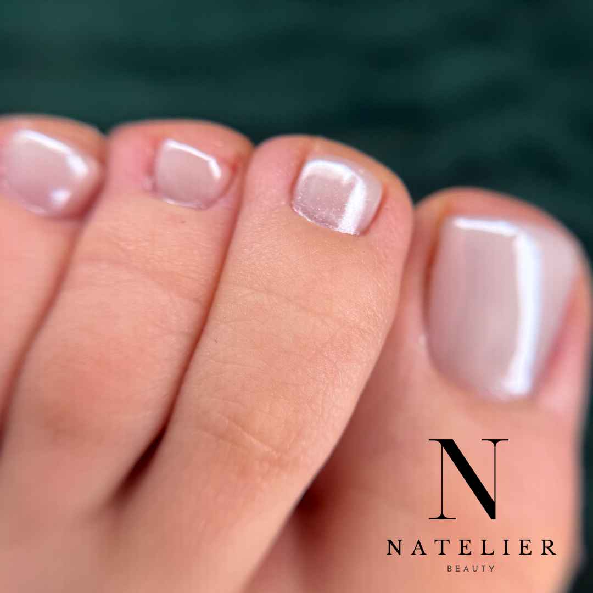

Spa Fotpleie Pedikyr
En medisinsk pedikyr som starter med et varmt fotbad, etterfulgt av Pododisc-systemet – en innovativ elektrisk fil med engangsdiscer som skånsomt og grundig eksfolierer hard hud, spesielt på hæler og fotsåler. Denne metoden er mer effektiv, tryggere og mer hygienisk enn tradisjonelle blader eller rasper. Discene kommer i ulike grovhetsgrader tilpasset hudtype og behov. Du kan velge shellac eller vanlig neglelakk i tillegg. Behandlingen avsluttes med aromatisk skrubb og fotkrem.
Spa Fotpleie
Avslappende pedikyr med fotbad, Pododisc (fjerning av død hud), negleklipp, peeling og nærende krem. Ingen shellac eller vanlig lakk inkludert. Anbefales for både menn og kvinner.
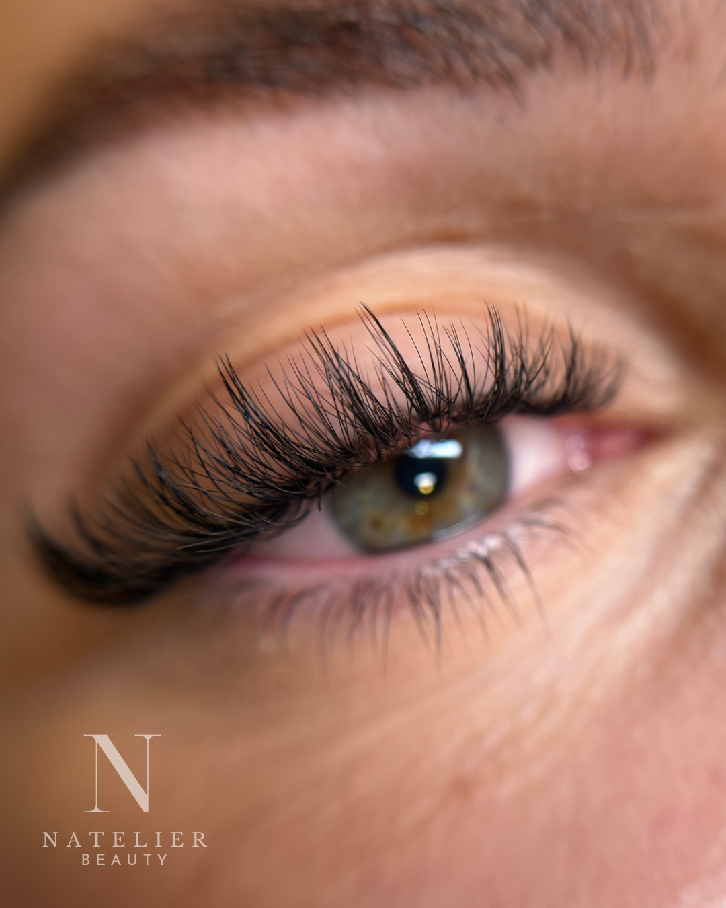
Bryn
a

Brynforming
Med pinsett eller voks formes brynene for å fremheve ansiktets naturlige struktur.
Brynfarging
Gir mer definisjon og farge til lyse eller tynne bryn. Henna farger også huden lett for en fyldigere effekt som varer opptil 7 dager på huden og 4–6 uker på hårene.
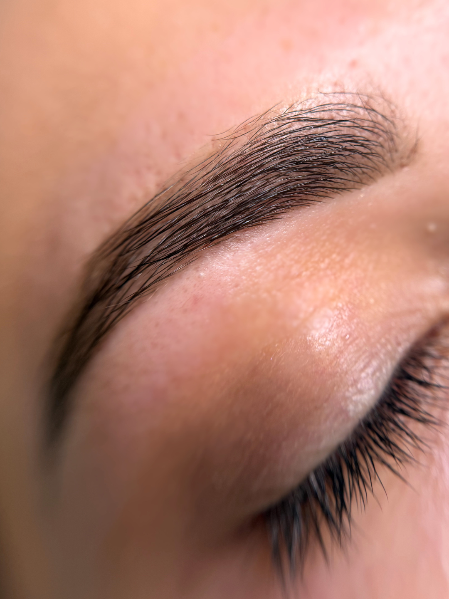

Brynlaminering (Brynsløft)
En transformasjon som retter ut og setter brynshårene i en fyldigere, oppbørstet form. Perfekt for å temme uregjerlige hår eller skape illusjonen av tykkere bryn uten sminke.
Vippeløft
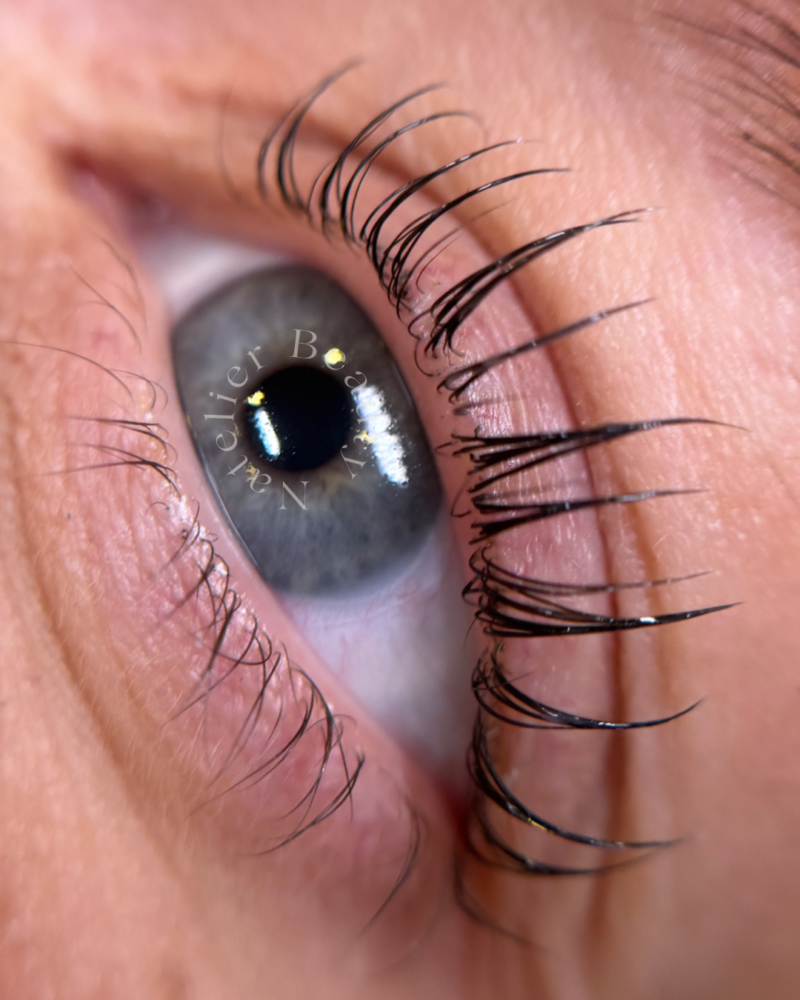
Vippeløft er en naturlig måte å fremheve dine egne vipper uten extensions. Behandlingen løfter og bøyer vippene fra roten, slik at de ser lengre, mørkere og mer definerte ut.
PMU (permanent makeup)
Powder Brows PMU
Pudder bryn er en semi-permanent make-up-teknikk som skaper myke, skyggelagte bryn med en puddereffekt – lik sminkede bryn.
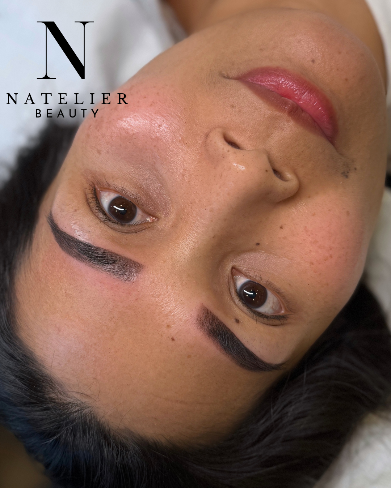
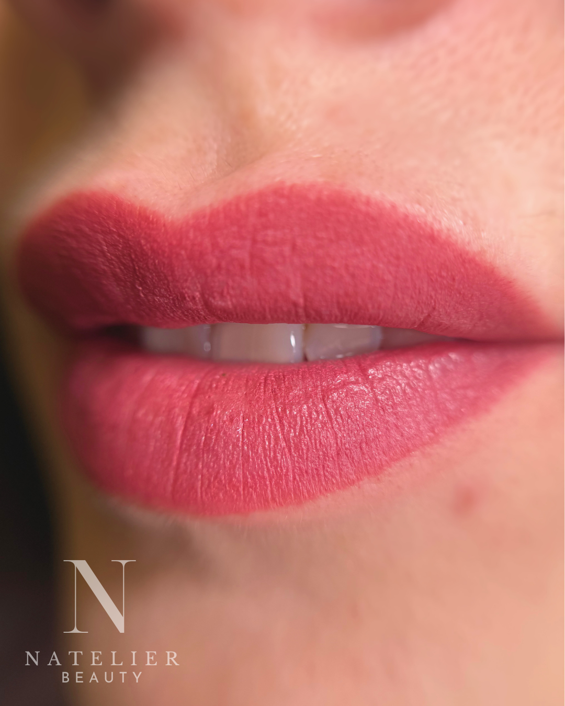
Lip blush PMU
Permanent makeup for lepper er en subtil, profesjonell behandling som fremhever leppenes naturlige farge, symmetri og definisjon. Den passer for personer som har mistet pigment i leppene med alderen, eller som ønsker en myk effekt som minner om leppestift.
Our Location
Du finner oss i første etasje, ring på dørtelefonen “Natelier”